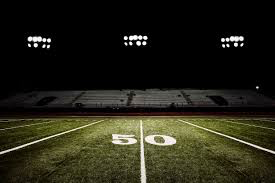
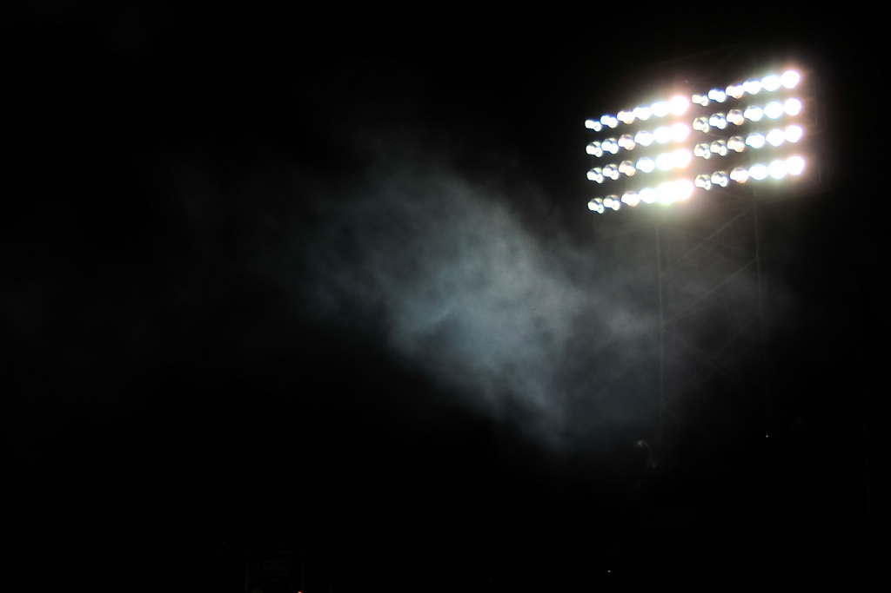

About an hour later the players arrived. It was time to get under way.
“Welcome, guys” were the words Coach Gary Gaines used to begin the 1988 season, and fifty-five boys dressed in identical gray shirts and gray shorts, sitting on identical wooden benches, stared into his eyes. They listened, or at least tried to. Winning a state championship. Making All-State and gaining a place on the Permian Wall of Fame. Going off after the season to Nebraska, or Arkansas, or Texas. Whatever they fantasized about, it all seemed possible that day.
Gaines's quiet words washed over the room, and in hundreds of other Texas towns celebrating the start of football practice that August day there were similar sounds of intimacy and welcome, to the eastern edge of the state in Marshall, to the northern edge in Wichita Falls, to the southern edge in McAllen, to the western edge in El Paso. They were Gaines's words, but they could have come from any high school coach renewing the ritual of sport, the ritual of high school football.